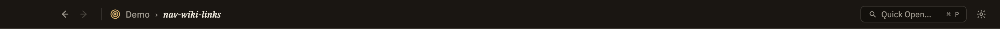

Docs/Navigation/Back / forward
Back / forward
As you move between notes, sources, and queries, Minerva remembers where you've been — so you can retrace your steps. Press ⌘[ to go back and ⌘] to go forward (use Ctrl on Windows and Linux), or click the two arrows in the title bar. It works just like the back and forward buttons in a web browser.
The controls

Going back doesn't just reopen a note — it returns you to the exact spot you were reading, not the top of the note. Sources and queries are remembered the same way, so you can step back out of a query or a source you were looking at just as easily.
What counts as a step
Most ways of moving around leave a trail you can walk back along, but a couple don't:
[[link]] to hop from one note to another builds a trail, so you can walk right back out of a chain of linked notes.If you step back a few notes and then head off in a new direction — clicking a link or opening something from the sidebar — the forward trail is cleared, just like in a web browser. To revisit those notes you'd navigate to them again.
Your trail is per-project: opening a different thoughtbase starts fresh with an empty history.